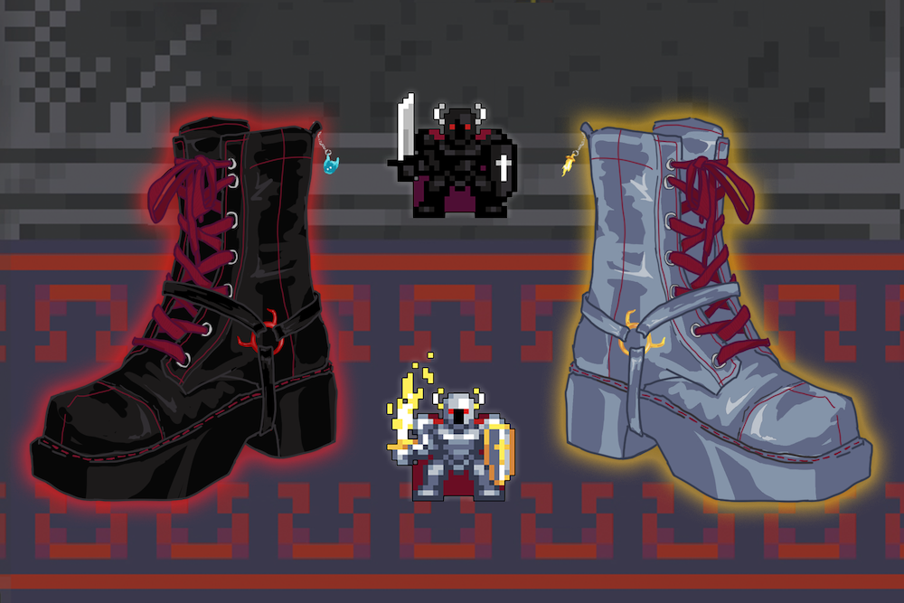

oryx boots
The objective of this project was to design a shoe inspired by the game Realm of the Mad God. I took inspiration after the game's final boss, Oryx the Mad God 3 (O3). This version of the boss has two distinct forms (regular/exalted), which I mirrored in my design. The left/original version features a small Craig charm, referencing a character often associated with Oryx; the exalted version features a small Divinity charm, referencing an item dropped by O3.
I won 1st place of 10 with this design, so I both enjoy this project personally and consider it a decent achievement. My choice to make the shoes boots is partially because of my personal inclination toward boots of this style, but also because I felt that the combat boot look works well with the themes of Oryx. The boots look tough and practical, but also have some added flair. Overall, I am pleased with the results, and felt it was a good opportunity to study a reflective, smooth leather-like material.
Adobe Photoshop; February 2021